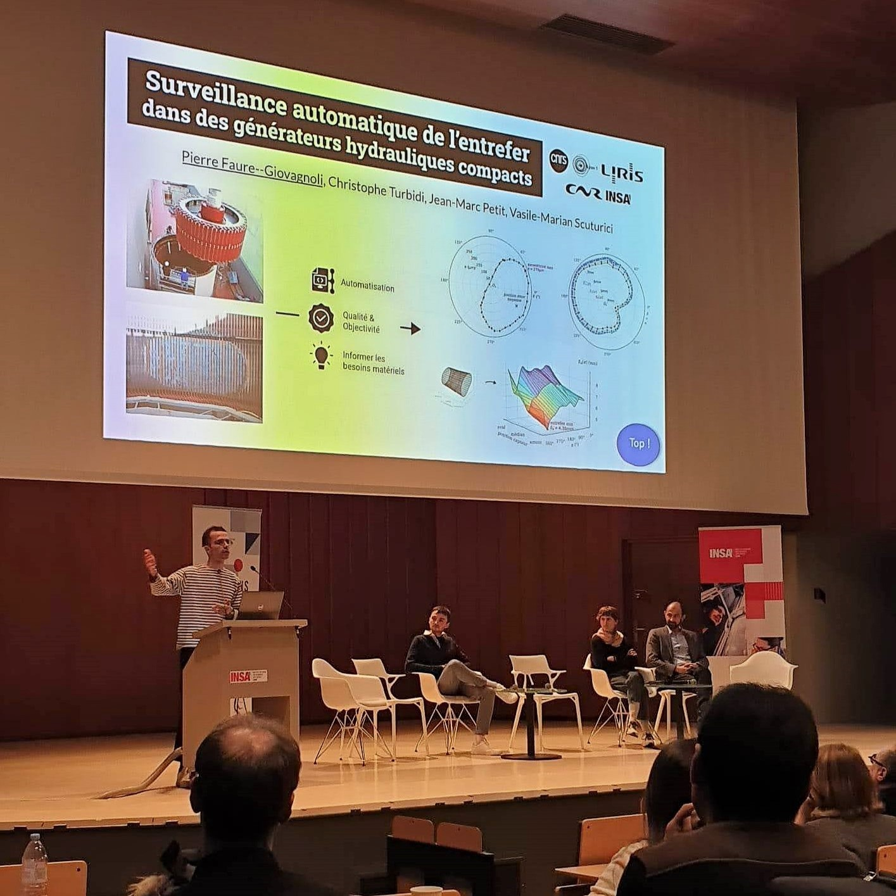

Publications in Conferences and Journals
- Functional dependencies with predicates: what makes the g3-error easy to compute?
Vilmin Simon, Faure--Giovagnoli Pierre, Petit Jean-Marc and Scuturici Vasile-Marian
28th International Conference on Conceptual Structures (ICCS) • research paper • 2023
BDA • conference presentation • 2022
- Automatic Processing of Air Gap Monitoring Signals in Hydro-Generators
Faure--Giovagnoli Pierre, Christophe Turbidi and Scuturici Vasile-Marian
SURVISHNO • conference presentation • 2023
- Usefulness of synthetic datasets for diatom automatic detection using a deep-learning approach
Aishwarya Venkataramanan, Pierre Faure-Giovagnoli, Cyril Regan, David Heudre, Cécile Figus, Philippe Usseglio-Polatera, Cedric Pradalier and Martin Laviale
Engineering Applications of Artificial Intelligence (Elsevier) • journal article • 2022
- Assessing the Existence of a Function in your Dataset with the g3 Indicator
Faure--Giovagnoli Pierre, Petit Jean-Marc and Scuturici Vasile-Marian
38th IEEE International Conference on Data Engineering (ICDE) • research paper • 2022
BDA • conference presentation • 2022
[paper]
• [video]
• [github]
- ADESIT: Visualize the Limits of your Data in a Machine Learning Process
Faure--Giovagnoli Pierre and Petit Jean-Marc, Scuturici Vasile-Marian and Le Guilly Marie
47th International Conference on Very Large Data Bases (VLDB) • demonstration paper • 2021
BDA • conference presentation • 2021 • best demonstration paper award
[paper]
• [poster]
• [video]
• [website]
• [github]
- Deep-Learning for Automated Diatom Detection and Identification for the Ecological Diagnosis of Fresh-water Environments
Faure--Giovagnoli Pierre
Georgia Institute of Technology • Master's thesis report • 2020
[paper]
• [poster]
Participations in Workshops and Seminaries
- Automatic air gap monitoring in compact hydro-generators
Faure--Giovagnoli Pierre, Christophe Turbidi and Scuturici Vasile-Marian
Sustainable IT week (INSA Lyon) • oral presentation (180s) • 2023
Global Industrie (INSAVALOR stand) • oral presentation • 2023
- Assessing the existence of a function in a dataset: complexity, algorithmics and visualization
Faure--Giovagnoli Pierre, Vilmin Simon, Petit Jean-Marc and Scuturici Vasile-Marian
MALOTEC seminar at the LORIA laboratory • oral presentation • 2023
Graph and Databases Workshop (ANR GrR) • oral presentation • 2023
MaDICS Défis théoriques pour les sciences du climat • poster • 2022
MaDICS Symposium • poster • 2022
MaDICS BigData4Astro • oral presentation • 2021
- Usefulness of synthetic datasets for diatom automatic detection using a deep-learning approach
Faure-Giovagnoli Pierre, Venkataramanan Aishwarya, Heudre David, De Garidel-Thoron Thibault, Noûs Camille, Usseglio-Polatera Philippe, Pradalier Cedric and Laviale Martin
Imaginecology • oral presentation • 2020
[video]
5ème colloque biennal des Zones Ateliers-CNRS • poster • 2020
 Teaching
Teaching
I teached about 200 hours at INSA Lyon
- algorithmics (TD)
- database theory (TD)
- C++ programming language (TP)
- Java programming language (academic support)
- mathematics (academic support)
 Misc
Misc
Took part in the Machine Learning for Oceans summer school [infos]
Sorbonne Center for Artificial Intelligence (Paris, France)
Reviewer for SIGMOD 2022, ICDM 2021 and ICDM 2022